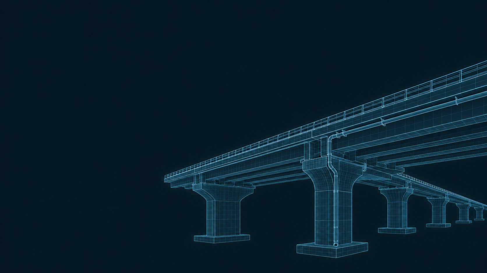

Tema da tese de doutorado
Manutenção Proativa Sistêmica de Obras de Arte Especiais: Modelo Integrado com BIM, Inteligência Artificial, AHP-Gaussiano e Custo Baseado no Risco
Revisão sistemática e definição dos objetivos
BrIM e risco
hidrológicoaplicados à manutenção preditiva
da drenagem de OAEs
Representação conceitual de ponte e drenagem
01 Método da revisão
Três buscas complementares.
Uma base rastreável.
Scopus e Web of Science · buscas em 2 de outubro de 2026 · orientação PRISMA 2020
Digitalização e manutenção
Pontes + BrIM/BIM/gêmeos digitais + manutenção
Água, drenagem e desempenho
Pontes + hidrologia/drenagem + condição e risco
Integração digital e hidrológica
Pontes + BrIM/BIM/gêmeos digitais + hidrologia
2021–2026 · inglês, português e espanhol
Artigos, revisões e trabalhos completos de congresso
Ocorrências recuperadas, antes da deduplicação
| Estratégia de busca | Scopus | Web of Science |
|---|---|---|
| EB1 | 455 | 270 |
| EB2 | 1.664 | 1.312 |
| EB3 | 5 | 3 |
| Total | 2.124 | 1.585 |
02 Mapeamento bibliográfico
Informação, água e manutenção
Coocorrência de termos · levantamento exploratório no OpenAlex · 131 documentos
03 Direção da pesquisa
Da exposição hídrica
à decisão de manutenção
Objetivo geral
Desenvolver uma estrutura BrIM orientada ao risco hidrológico para apoiar a priorização da manutenção preditiva dos sistemas de drenagem de pontes e viadutos.
Água, umidade e deficiências de drenagem relacionadas à deterioração das OAEs.
- 01
Mapear
Métodos, variáveis e tecnologias relacionados ao tema na literatura.
- 02
Relacionar
Exposição hidrológica, condição da drenagem e consequências estruturais.
- 03
Estruturar
Indicadores e atributos necessários em ambiente BrIM.
- 04
Priorizar
Propor um procedimento de priorização das intervenções de manutenção.

04 Visão do artigo completo
Uma proposta metodológica
para a drenagem de OAEs
BrIM, risco hidrológico e apoio à manutenção de pontes e viadutos
Problema investigado
Relação entre exposição à água, deficiências de drenagem e deterioração de pontes e viadutos.
Proposta metodológica
Integrar informações hidrológicas, desempenho hidráulico, condição da drenagem e consequências estruturais em BrIM.
Aplicação exploratória
Demonstrar o procedimento com dados disponíveis de OAEs brasileiras, para apoiar a identificação de situações críticas.
Contribuição esperada
Apoiar a priorização de inspeções e intervenções, criando uma base informacional para a manutenção preditiva.
Contribuição esperada
Da integração das informações à priorização da manutenção.